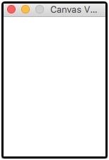
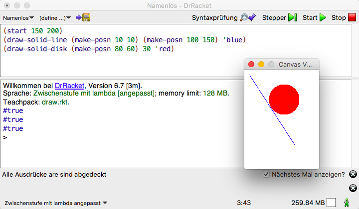
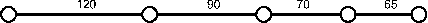

Aufgaben
Einführung in die Programmierung
Inhaltsverzeichnis
- 1. Aufgabe (Erste Schritte in Racket)
- 2. Aufgabe (Auswertung arithmetischer Ausdrücke)
- 3. Aufgabe (Aufschreiben elementarer Funktionen)
- 4. Aufgabe (Aufschreiben elementarer Funktionen)
- 5. Aufgabe (Anwenden der Aufschreibregeln)
- 6. Aufgabe (Profit für den Kinobesitzer)
- 7. Aufgabe (Modifikation von
kino.rkt - 8. Aufgabe (Einsatz von Hilfsfunktionen)
- 9. Aufgabe (Ersetzungsmodell)
- 10. Aufgabe (bedingte Funktion)
- 11. Aufgabe (Zusatzaufgaben zu bedingten Funktionen)
- 12. Aufgabe (Datenabstraktion)
- 13. Aufgabe (Datenabstraktion – Zusatzaufgabe)
- 14. Aufgabe (Datenabstraktion – gemischte Daten)
- 15. Aufgabe (Datenabstraktion – gemischte Daten – Zusatzaufgabe)
- 16. Aufgabe (Listenkonstruktion und -zerlegung)
- 17. Aufgabe (Listenverarbeitung)
- 18. Aufgabe (Funktionen über zwei Listen)
- 19. Aufgabe (Formale Aspekte)
- 20. Aufgabe (lokale Definitionen)
- 21. Aufgabe (Listen über gemischten Daten – Zusatzaufgabe)
- 22. Aufgabe (Hilfsfunktionen mit akkumulierenden Parametern)
- 23. Aufgabe (Anwendung von
map,filterundreduce) - 24. Aufgabe (Definition von Funktionen höherer Ordnung)
- 25. Aufgabe (die Funktion mapp)
1 Aufgabe (Erste Schritte in Racket)
Machen Sie sich mit den NORDAKADEMIE-Rechnern vertraut und richten Sie Ihren Arbeitsplatz ein (Mail, Webbrowser, Verzeichnisse für die Vorlesungen usw.).
Finden und starten Sie DrRacket nach den Anweisungen in der Vorlesung. Werten Sie einen ersten Ausdruck aus, z. B. (* 6 7).
Welche Funktion haben die Buttons? Welche Menü-Befehle verstehen Sie schon?
Schauen Sie sich in einem Webbrowser die Seiten zu Racket unter https://racket-lang.org/ an. Wo finden Sie Hilfe zur Bedienung von DrRacket? Wie können Sie sich über die Sprache Racket informieren? Wo finden Sie alle vordefinierten mathematischen Funktionen?
2 Aufgabe (Auswertung arithmetischer Ausdrücke)
- Wie wird der Ausdruck
(* (+ 2 2) (/ (* (+ 3 5) (/ 30 10)) 2))
ausgewertet? - Experimentieren Sie mit verschiedenen Operatoren und Zahlenarten.
Werten Sie die folgenden Ausdrücke aus und vergleichen Sie die Resultate:
(- 1.0 0.9) (- 1000.0 999.9) (- #i1000.0 #i999.9)
3 Aufgabe (Aufschreiben elementarer Funktionen)
Schreiben Sie für die folgenden mathematischen Formeln Racket-Funktionsdefinitionen auf:
- \(n^2 + 1\)
- \(\frac{1}{2}n^2 + 3\)
- \(2 - \frac{1}{n}\)
Geben Sie die Racket-Funktionen in das Definitionsfenster von DrRacket ein. Geben Sie anschließend in das Interaktionsfenster Funktionsaufrufe für diese Funktionen ein.
4 Aufgabe (Aufschreiben elementarer Funktionen)
In der Praxis findet der Programmierer selten mathematische Formeln vor. Aufgabenstellungen sind eher als Prosatext gegeben. Die Berechnungsformeln muss er selbst entwickeln durch
- eigenes Nachdenken,
- Nachschlagen in geeigneten Quellen oder
- Nachfragen beim Auftraggeber.
Finden Sie für die folgenden Aufgabenstellungen die passenden Formeln und schreiben Sie diese als Funktionsdefinitionen in Racket auf:
- Berechnung des Rauminhalts eines Quaders aus dessen Länge, Breite und Höhe.
- Schreiben Sie eine Funktion, die aus der Entfernung und der Geschwindigkeit zweier Züge die Zeit ermittelt, nach der die Züge sich treffen, wenn Sie sich auf einem gemeinsamen Streckenabschnitt von ihren jeweiligen Startpunkten aus aufeinander zu bewegen.
Berechnung der Miete, die eine andere Spielerin in Monopoly bezahlen muss, falls sie auf einen Bahnhof trifft, der einer anderen Spielerin gehört. Die Miete ist davon abhängig wie viele Bahnhöfe der anderen Spielerin gehören:
Anzahl der Bahnhöfe Miete 1 500 2 1000 3 2000 4 4000 Hinweis: Ein Aufruf
(expt x y)liefert \(x^y\) als Ergebnis.
5 Aufgabe (Anwenden der Aufschreibregeln)
Schreiben Sie die Funktion zur Berechnung der Bahnhofsmiete in Monopoly (s. o.) gemäß den Regeln 1 bis 3 aus der Vorlesung auf.
Wenn nichts anderes angeben ist, sind auch die Funktionen für die folgenden Aufgaben gemäß diesen Regeln aufzuschreiben!!!
6 Aufgabe (Profit für den Kinobesitzer)
Ein altmodisches Vorstadtkino besitzt eine einfache Formel für die
Berechnung des Profits einer Vorstellung: Jeder Kinobesucher
bezahlt 500 Währungseinheiten für die Eintrittskarte. Jede
Vorstellung kostet das Kino 2000 Währungseinheiten plus 50
Währungseinheiten pro Besucher. Schreiben Sie eine Funktion profit zur
Berechnung des Profits bei gegebener Besucherzahl.
7 Aufgabe (Modifikation von kino.rkt
- Modifizieren Sie das Programm
kino.rktso, dass die Fixkosten einer Veranstaltung wegfallen und dafür 15 Währungseinheiten pro Besucher an Kosten anfallen. - Nehmen Sie die gleiche Modifikation auch an der Funktion
profitaus der Vorlesung vor, die ohne Hilfsfunktionen auskommt, und vergleichen Sie die Ergebnisse.
8 Aufgabe (Einsatz von Hilfsfunktionen)
Die folgenden Aufgaben sind unter Benutzung von Hilfsfunktionen zu lösen. Befolgen Sie unbedingt alle in der Vorlesung angegebenen Regeln:
- Schreiben Sie ein Programm, das das Volumen eines Zylinders zu berechnen erlaubt. Eingangsgrößen sind der Radius und die Höhe des Zylinders.
- Schreiben Sie ein Programm, das die Oberfläche eines Zylinders zu berechnen erlaubt. Eingangsgrößen sind der Radius und die Höhe des Zylinders.
- Schreiben Sie ein Programm, das die Oberfläche eines Rohrs zu berechnen erlaubt. Eingangsgrößen sind der Innenradius, die Wandstärke und die Länge des Rohrs.
9 Aufgabe (Ersetzungsmodell)
Gegeben sei die folgende Funktionsdefinition:
(define f (lambda [x y] (+ (* 3 x) (* y y))))
Werten Sie die folgenden Ausdrücke Schritt für Schritt unter Anwendung des Ersetzungsmodells aus:
(f 1 (* 2 3))(+ (f 1 2) (f 2 1))(f (f 1 (* 2 3)) 19)
10 Aufgabe (bedingte Funktion)
Schreiben Sie ein Programm, das aus dem Bruttoeinkommen eines Arbeitnehmers, das sich aus der Anzahl der Arbeitsstunden und seinem Bruttostundenlohn ergibt, sein Nettoeinkommen durch Abzug der Einkommensteuer berechnet. Die Einkommensteuer wird dabei nach einem steuererklärungaufbierdeckelgeeigneten Tarif ermittelt, der folgendermaßen definiert ist:
| Einkommen | Steuersatz [%] |
|---|---|
| \(<= 5000\) | 0 |
| \(> 5000\; und \leq 10000\) | 15 |
| \(>10000\; und \leq 100000\) | 29 |
| \(>100000\) | 64 |
Der Steuersatz gilt immer nur für die Einkommensanteile in dem jeweiligen Intervall.
Die Funktion nettoeinkommen soll nach folgendem Schema aufrufbar sein:
(nettoeinkommen anzahl-arbeitsStunden stundenLohn)
Hier noch ein paar Testvorgaben:
;; Beispielanwendungen (= (nettoeinkommen 1 5001) 5000.85) (= (nettoeinkommen 1 10001) 9250.71) (= (nettoeinkommen 1 100001) 73150.36)
Hinweise:
- Lesen Sie den Aufgabentext aufmerksam durch. Jeder Satz bedeutet etwas.
- Entwickeln Sie die Funktion gemäß den Regel 1 bis 6. Benutzen Sie Hilfsfunktionen und machen von Variablendefinitionen (benannte Konstanten, Regel 5) Gebrauch.
11 Aufgabe (Zusatzaufgaben zu bedingten Funktionen)
Eine Kreditkartengesellschaft gewährt ihren Kunden nach Jahresumsatz gestaffelte Rückerstattung von Kreditkartenbelastungen. Die Rückerstattungen könnten z. B. wie folgt aussehen:
- ein viertel Prozent für die ersten 500€ des Jahresumsatzes (nur Belastungen keine Gutschriften werden gezählt),
- ein halbes Prozent für die nächsten 1000€, d. h. für den Umsatzanteil zwischen 500€ und 1500€,
- ein dreiviertel Prozent für die nächsten 1000€, d. h. für den Umsatzanteil zwischen 1500€ und 2500€ und
- ein Prozent für die Umsatzanteile oberhalb von 2500€.
Ein Kunde mit einem Umsatz von 400€ erhält demnach eine Gutschrift von 1€ (\(= \frac{1}{4} \cdot \frac{1}{100} \cdot 400\)). Ein Kunde mit einem Umsatz von 1400€ erhält eine Gutschrift von 5,75€:
- 1,25€ (\(= \frac{1}{4} \cdot \frac{1}{100} \cdot 500\)) für die ersten 500€ plus
- 4,50€ (\(=\frac{1}{2} \cdot \frac{1}{100} \cdot 900\)) für die nächsten 900€
Lösen Sie die folgenden Teilaufgaben
- Bestimmen Sie manuell die Gutschriften für Umsätze 2000€ und 2600€.
- Schreiben Sie eine Funktion
rueckerstattung, die einen Umsatz als Argument akzeptiert und den Rückerstattungsbetrag ermittelt.
- Wieviele reelle Lösungen besitzt eine quadratische Gleichung
\[ax^2 + bx + c = 0\]
für beliebige Koeffizienten \(a\), \(b\) und \(c\)?
- Betrachten Sie zunächst nur echte quadratische Gleichungen, d. h. es gilt \(a\neq0\)
- Erweitern Sie die Lösung so, dass auch der Fall \(a=0\) korrekt behandelt wird.
12 Aufgabe (Datenabstraktion)
Gehen Sie für die Lösung der Aufgabe unter Anwendung der Regeln 7 und 8!
Definieren Sie eine Datenstruktur für „Zeitpunkte seit Mitternacht”, die aus den Komponenten
stunden,minutenundsekundenbesteht.Entwickeln Sie eine Funktion
zeit->sekunden, die eine Zeitpunkt-seit-Mittnacht-Struktur verarbeitet und die seit Mitternacht vergangenen Sekunden berechnet.Definieren Sie geeignete Datenstrukturen für Kreise, die durch
- die Koordinaten des Mittelpunkts und
- den Radius und
gegeben sind.
Schreiben Sie eine Funktion, die prüft, ob ein Punkt innerhalb eines Kreises liegt.
13 Aufgabe (Datenabstraktion – Zusatzaufgabe)
13.1 Vorbemerkungen
In den Lehrsprachen von DrRacket gibt es ein vordefinierte
Strukturdefinition namens posn für Punkte in der Ebene, die genauso
aufgebaut ist wie die Strukturdefinition point aus der
Vorlesung. Die damit vordefinierten Funktionen sind
- die Konstruktionsfunktion
make-posn, - die Selektionsfunktionen
posn-xundposn-yund - das Typprädikat
posn?.
Wenn man über den Menüpunkt Sprache->Teachpack hinzufügen... das
Teachpack draw.rkt auswählt und anschließend den Start-Knopf
drückt, steht ein Grafikpaket mit den folgenden Funktionen bereit:
draw-solid-line- erwartet zwei Punkte (
posn-Strukturen), die den Anfang und das Ende einer Strecke definieren sowie eine Farbe als Argumente draw-solid-rect- erwartet vier Argumente: ein Punkt für die linke obere Ecke des Rechtecks, zwei Zahlen für Breite und Höhe des Rechecks und eine Farbe
draw-solid-disk- erwartet drei Argumente: ein Punkt für den Mittelpunkt, eine Zahl für den Radius der Scheibe und eine Farbe
draw-circle- erwartet drei Argumente: ein Punkt für den Mittelpunkt, eine Zahl für den Radius des Kreises und eine Farbe
Alle Funktionen liefern als Funktionswert true, wobei wir in diesem Fall
an den Funktionswerten weniger interessiert sind als an ihrem
Effekt. Der besteht nämlich darin, dass die Prozeduren jeweils eine
Strecke, ein Rechteck, eine Scheibe und einen Kreis auf eine zuvor
definierte Zeichenfläche zeichnen.
Eine Zeichenfläche kann mit einem Ausdruck (start x y) erzeugt
werden, wobei x und y die Breite und die Höhe in Pixeln der
Zeichenfläche angeben. Zum Beispiel erzeugt ein Aufruf (start 150
200) die folgende Zeichenfläche:  Ein
Anwendungsbeispiel zeigt die folgende Abbildung:

Der Ursprung des Koordinatensystems liegt in der linken oberen Ecke
der Zeichenfläche. Die x-Koordinate zählt nach rechts, die
y-Koordinate nach unten positiv:

Die Farben werden durch Symbole wie 'yellow, 'red, 'green
angegeben. Bitte beachten Sie das vorangestellte Hochkomma.
Für jede Zeichenoperation gibt es eine korrespondierende
Löschoperation: clear-solid-line, clear-solid-rect,
clear-solid-disk und clear-circle. Wenn diese Funktionen mit den
gleichen Argumenten wie zuvor die zugehörigen draw-Operationen aufgerufen
werden, werden die entsprechenden Figuren von der Zeichenfläche
entfernt.
Um mehrere Zeichenoperationen hintereinander ausführen zu
können, d. h. * mehrere Effekte* zu kombininieren, macht man davon
Gebrauch, dass die einzelnen Zeichenoperationen #true als Resultat
liefern. Dadurch ist es möglich mehrere Zeichenoperationen
hintereinander auszuführen, indem man sie in eine Und-Verknüpfung
einschließt:
(and exp1 exp2)
Dieser Ausdruck bewirkt, dass man zuerst den Effekt von exp1 und
anschließend den von exp2 zu sehen bekommt.
Mit (stop) wird die Zeichenfläche geschlossen.
13.2 Aufgabenstellungen
- Experimentieren Sie mit den o. g. Funktionen.
- Kreise und Rechtecke bewegen
- Entwickeln Sie eine Datenstruktur
circlefür farbige Kreise. Diese sollen durch drei Komponenten definiert sein: den Mittelpunkt, den Radius und die Farbe des Umfangs. - Schreiben Sie die Datendefinition für Kreise und die Funktionsschablone (gemäß Regeln 7 und 8) für Kreise verarbeitende Funktionen.
- Benutzen Sie die Schablone für die Entwicklung einer Funktion
draw-a-circle. Die Funktion erwartet einen Kreis (circle) als Argument und zeichnet ihn auf einer Zeichenfläche. Der Funktionswert sollte#truesein. - Entwickeln Sie eine Funktion
translate-circlemit einercircle-Strukturcund einerposn-Strukturdeltaals Parameter. Die Funktion liefert einencircleals Resultat, dessen Mittelpunkt gegenüber dem voncum den x-Wert vondeltanach rechts und um den y-Wert vondeltanach unten verschoben ist. Die Funktion hat keinen Effekt auf der Zeichenfläche. - Schreiben Sie eine Funktion
clear-a-circle, die einen Kreis von der Zeichenfläche entfernt. Schreiben Sie eine Funktion
draw-and-clear-circle, die einecircle-Struktur zeichnet, eine kurze Zeit wartet und sie anschließend wieder entfernt. Für die Implementierung der Wartezeit steht die Prozedursleep-for-a-whilezur Verfügung. Der Aufruf(sleep-for-a-while 3)erzeugt eine Wartezeit von drei Sekunden. Der Funktionswert ist#true.Die Funktion
;; zeichnet und löscht einen Kreis a-circle und bewegt ihn um a-posn (define move-circle (lambda [a-posn a-circle] (cond [(draw-and-clear-circle a-circle) (translate-circle a-circle a-posn)] [else a-circle])))
zeichnet und löscht einen Kreis auf der Zeichenfläche und erzeugt anschließend einen (verschobenen) Kreis, so dass eine erneute Zeichenoperation den Kreis an einer neuen Position erscheinen lässt.
Zum Beispiel bewegt der Ausdruck
(draw-a-circle (move-circle (make-posn 10 0) (move-circle (make-posn 10 0) (move-circle (make-posn 10 0) (make-circle (make-posn 10 50) 10 'green)))))
einen grünen Kreis dreimal um 10 Pixel nach rechts. Der äußere Aufruf von
draw-a-circlesorgt dafür, dass auch die letzte Position des Kreises angezeigt wird.Das sei nur ein kleine Anregung für eigene „Animationen“.
- Entwickeln Sie eine Datenstruktur
14 Aufgabe (Datenabstraktion – gemischte Daten)
Lösen Sie die Aufgabe unter Anwendung der passenden Regeln!
Ein Mitarbeiter ist entweder
- ein Festangestellter oder
- ein Werkstudent
Ein Festangestellter wird definiert durch
- seinen Namen,
- sein Grundgehalt,
- die im letzten Monat geleisteten Arbeitsstunden.
Ein Werkstudent wird definiert durch
- seinen Namen,
- seinen Stundenlohn,
- die im letzten Monat geleisteten Arbeitsstunden.
Definieren Sie
- geeignete Datenstrukturen für Mitarbeiter,
- eine Funktionsschablone für Funktionen, die Mitarbeiter verarbeiten.
Entwickeln auf der Grundlage dieser Schablone eine Funktion, die den Bruttomonatslohn eines Mitarbeiters berechnet. Bei Festangestellten berechnet sich der Monatslohn aus dem Grundgehalt zuzüglich Überstundenentgelt. Überstunden sind die über die monatliche Sollarbeitszeit (die als globale Konstante definiert wird) hinausgehenden Arbeitsstunden. Der Stundenlohn pro Überstunde berechnet sich aus dem Grundgehalt und der monatlichen Sollarbeitszeit plus \(25\%\). Minderstunden bleiben unberücksichtigt.
15 Aufgabe (Datenabstraktion – gemischte Daten – Zusatzaufgabe)
15.1 Vorbemerkung
Diese Aufgabe stellt eine Fortführung von Aufgabe 13 dar. Falls Sie diese noch nicht bearbeitet haben, sollte Sie zunächst damit beginnen.
15.2 Aufgabenstellungen
- Enwtickeln Sie eine Datenstrukturdefinition für farbige
Rechtecke. Ein Rechteck sei durch einen Punkt (
posn-Struktur), der die linke obere Ecke des Rechtecks bildet, zwei Zahlen für die Höhe und die Breite des Rechecks und ein Symbol für seine Farbe charakterisiert. - Entwickeln sie die folgenden Funktionen
draw-a-rectangle- zeichnet das Rechteck auf die Zeichenfläche. Im Gegensatz zu den Kreisen aus Aufgabe 13 sollen die Rechtecke immer mit der Farbe gefüllt gezeichnet werden.
in-rectangle?- akzeptiert ein Rechteck und einen Punkt als Argumente und prüft, ob der Punkt innerhalb des Rechecks liegt.
translate-rectangle- verschiebt ein Rechteck auf die gleiche
Art, wie es die Funktion
translate-circleaus Aufgabe 13 mit Kreisen tut. Diese Funktion hat keinen Effekt auf der Zeichenfläche. clear-a-rectangle- entfernt ein Rechteck von der Zeichenfläche.
move-rectangle- soll analog zur Funktion
move-circleaus Aufgabe 13 ein Rechteck zeichnen, löschen und mit einem verschobenen Rechteck antworten.
- Definieren Sie eine gemischte Datenstruktur für Figuren (shapes), die als Generalisierung mindestens Kreise und Rechtecke umfassen sollte. Schreiben Sie die Funktionsschablone für Funktionen, die Figuren verarbeiten, auf.
- Programmieren Sie nun die oben genannten Funktionen für Figuren
(z. B.
draw-a-shape)
16 Aufgabe (Listenkonstruktion und -zerlegung)
Werten Sie die folgenden Funktionsaufrufe aus:
| Nr. | Ausdruck | Lösung |
|---|---|---|
| a) | (first '((A) B C D)) |
|
| b) | (rest '((A)(B C D))) |
|
| c) | (cons '(A B) '(A B)) |
|
| d) | (cons 'A '()) |
|
| e) | (first '(((A)))) |
|
| f) | (rest '(((A)))) |
|
| g) | (cons '((A)) empty) |
|
| h) | (equal? 'X1 'X2) |
|
| i) | (equal? '(X1) 'X2) |
|
| j) | (equal? '(X1) '(X2)) |
|
| k) | (list? 'X1) |
|
| l) | (list? '(X1)) |
|
| m) | (empty? '()) |
|
| n) | (empty? '(())) |
17 Aufgabe (Listenverarbeitung)
- Die Funktion
sumliefere, angewendet auf eine Liste von Zahlenx, die Summe der Elemente. - Die Funktion
prodliefere, angewendet auf eine Liste von Zahlenx, das Produkt der Elemente.
Die Funktion
maximumliefere, angewendet auf eine Liste von Zahlenx, das Maximum der Elemente.Die folgende Lösung erlaubt nur nicht leere Listen von Zahlen:
- Die Funktion
enthaelt?beantworte, angewendet auf ein Symbol und eine Liste von Symbolen, die Frage, ob das Symbol in der Liste enthalten ist oder nicht Schreiben Sie eine Funktion
(declist x), die aus einer Listexvon Zahlen eine neue Liste berechnet, deren Elemente um 1 kleiner sind, als die der ursprünglichen Liste:x (declist x) (2 5 7) (1 4 6) () () Definieren Sie eine Funktion
(flatten x), die als Argument eine Listexmit beliebig tief geschachtelten Unterlisten hat und als Ergebnis eine Liste von Atomen liefern soll mit der Eigenschaft, dass alle Atome, die in x vorkommen auch in(flatten x)in derselben Reihenfolge vorkommen:x (flatten x) (A (B C) D) (A B C D) (((A B) C)(D E)) (A B C D E) ((((A)))) (A) Hinweis: Definieren Sie zuerst in der bekannten Art und Weise eine rekursive Datenstruktur für geschachtelte Listen. Leiten Sie daraus eine passende Funktionsschablone ab.
Schreiben Sie eine Funktion
(frequencies x), die aus einer Listexvon Atomen eine Liste von zwei-elementigen Listen erzeugt: Dabei ist das erste Element das Atom ausx, das zweite Element die Häufigkeit des Auftretens inx. Die Reihenfolge der Strukturen in der Ergebnisliste ist belanglos.x (frequencies x) (A B A B A C A) ((A 4) (B 2) (C 1)) () () Schreiben Sie eine Funktion
anzahl-bevor-summe-erreicht, die eine positive ganze Zahl, genanntsummeund eine Liste von positiven ganzen Zahlen, genanntlvzals Argumente akzeptiert. Sie gibt eine ganze Zahl \(n\) zurück, so dass die Summe der ersten \(n\) Elemente vonlvzkleiner alssum, die Summe der ersten \(n+1\) Elemente hingegen größer oder gleichsumist. Es ist ein Fehler, wenn die Summe der Elemente der Liste insgesamt kleiner als sum ist.
Beispiele:
sum lvz (anzahl-bevor-summe-erreicht sum lvz) 2 (2 5 7) 0 4 (2 5 7) 1 8 (2 5 7) 2 15 (2 5 7) Fehler Hinweise:
Für den Fehlerfall darf die Standardfunktion
errorbenutzt werden. Sie erwartet zwei Argumente, ein Smbol und eine Zeichenkette und könnte z. B. so benutzt werden:(error 'anzahl-bevor-summe-erreicht "Summe der Listenelemente zu klein")
- Lösen Sie die Aufgabe, ohne die Summe der Listenelemente zu berechnen.
18 Aufgabe (Funktionen über zwei Listen)
Die in den folgenden Aufgaben zu entwickelnden Funktionen haben alle 2 Listen-Parameter. Lösen Sie diese Aufgaben unter Anwendung der Regeln 11 bis 13. Überlegen Sie dabei, ob für die Erstellung der Funktionsschablone der Zugriff auf das erste Element und die Restliste hinsichtlich des ersten, des zweiten oder beider Parameter vorgenommen werden muss.
Schreiben Sie ein Funktion
concatenate, die zwei Listen von Symbolen aneinander hängt. Beispiel:(concatenate ’(a b c) ’(d e f)) => ’(a b c d e f)
Schreiben Sie eine Funktion
mult-2-num-lists, die zwei gleich lange Listen mit Zahlen zu einer Liste verarbeitet, die die Produkte der korrespondierenden Elemente der Argumentlisten enthält. Beispiel:(mult-2-num-lists ’(2 3 4) ’(7 8 9)) => ’(14 24 36)
o :student:
;; Zweckbestimmung s. Aufgabenstellung ;; ;; Datendefinition ;; Eine Liste-von-Zahlen ist entweder ;; 1. empty oder ;; 2. (cons z lvz), wobei z eine Zahl ;; und lvz eine Liste-von-Zahlen ist ;; ;; mult-2-num-lists : (list-of number) (list-of number) -> (list-of number) (check-expect (mult-2-num-lists '(2 3 4) '(7 8 9)) '(14 24 36)) (check-expect (mult-2-num-lists '() '()) '()) (define mult-2-num-lists (lambda [l1 l2] (cond [(empty? l1) empty] [else (cons (* (first l1) (first l2)) (mult-2-num-lists (rest l1) (rest l2)))])))
- Entwickeln Sie eine Funktion
merge, die 2 Listen von Zahlen
verarbeitet, die aufsteigend sortiert sind. Sie liefert eine sortierte Liste von Zahlen, die alle Zahlen aus den beiden Argumentlisten enthält. Wenn Zahlen in den Argumentliste mehrfach vorkommen, sollen Sie auch in der Ergebnisliste entsprechend oft auftauchen. Beispiel:
(merge ’(2 5 7) ’(1 3 5 9)) => ’(1 2 3 5 5 7 9)
19 Aufgabe (Formale Aspekte)
Werten Sie die folgenden Ausdrücke Schritt für Schritt aus:
- Ausdruck 1
(cond [(= 0 0 ) false] [(> 0 1 ) (equal? 'a 'a)] [else ( = (/ 1 0 ) 9)])
- Ausdruck 2
(cond [(= 2 0) false] [(> 2 1) (equal? 'a 'a )] [else (= ( / 1 2) 9)])
Gegeben sei folgende Racket-Funktion
(define f (lambda [n] (cond [(= n 0) 0] [else (+ (f (- n 1)) (/ 1 (* n (+ n 1))))])))
Zeigen Sie, dass der Aufruf
(f n)für alle natürlichen Zahlen \[n >= 0\] die Zahl \[f(n)=\frac{n}{n+1}\] berechnet.
20 Aufgabe (lokale Definitionen)
Schreiben Sie unter Anwendung der Regeln 11 bis 13 eine Funktion
exchange, die eine Liste von Symbolenlund zwei Symboles1unds2als Argumente erwartet und eine Liste als Resultat liefert, bei der jedes Auftreten vons1inldurchs2ersetzt ist. So soll z. B. der Aufruf(exchange '(a b c a c) 'a 'f)
das Resultat
(list 'f 'b 'c 'f 'c)
liefern.
Modifizieren Sie anschließend die Funktion so, dass durch Verwendung von lokalen Variablen Mehrfachberechnungen des gleichen Ausdrucks vermieden werden.
Bildung der ersten Ableitung mathematischer Formeln (symbolische Differentiation)
Es sollen Ausdrücke abgeleitet werden, die nur aus Konstanten, Variablen und den Operationen \(+\) und \(\cdot\) bestehen.
Sei \(D_x\) die partielle Ableitung einer Funktion \(f\) nach \(x\), dann gelten folgende Regeln:
- \(D_x(x) = 1\)
- \(D_x(y) = 0\), \(y\neq x\), sei \(y\) eine Konstante oder Variable
- \(D_x(e_1 + e_2) = D_x(e_1)+D_x(e_2)\) (Summenregel)
- \(D_x(e_1\cdot e_2) = e_1\cdot D_x(e_2) + e_2\cdot D_x(e_1)\) (Produktregel)
Repräsentation der Formeln:
- Konstante: numerisches Atom
- Variable: symbolisches Atom
- \(e_1 + e_2\): (ADD \(e_1\) \(e_2\))
- \(e_1 \cdot e_2\): (MUL \(e_1\) \(e_2\))
Anwendungsbeispiele:
Der Ausdruck
(diff '(add x x) x)
liefere '
(add 1 1)Der Ausdruck
(diff '(mul x x) 'x)
liefere '
(add (mul x 1) (mul 1 x)).
Hinweise:
- Definieren Sie zur Erzeugung von Formeln geeignete Hilfsfunktionen!
- Wenn eine Formel nicht korrekt aufgebaut ist, kann das Symbol ’ERROR zurückgeliefert werden, das möglicherweise in einem korrekten Teil der Formel eingeschachtelt erscheint.
- Machen Sie ausgiebig von lokalen Definitionen Gebrauch.
21 Aufgabe (Listen über gemischten Daten – Zusatzaufgabe)
Diese Aufgabe ist eine Fortführung der Aufgaben 13 und 15. Dort haben Sie Funktionen zum Bewegen einzelner Figuren (shapes) geschrieben. Ein Bild hingegen besteht aus einer Sammlung von Figuren. Um Bilder zeichnen, verschieben und löschen zu können ist es sinnvoll, alle Bildteile (Figuren) in einer Datenstruktur zusammen zu fassen. Da die Anzahl der Figuren eines Bildes von Bild zu Bild variieren kann, bietet es sich an, die Figuren eines Bildes in einer Liste zu verwalten.
- Beschreiben Sie eine Datendefinition für Listen von Figuren.
Erzeugen Sie eine Beispielliste (genannt face), die aus den Figuren der folgenden Tabelle besteht:
Figur Position Größen Farbe circle (50,50) 40 red rectangle (30,20) 5 × 5 blue rectangle (65,20) 5 × 5 blue rectangle (40,75) 20 × 10 red rectangle (45,35) 10 × 30 blue Die Tabelle setzt eine Zeichenfläche der Größe 300 x 100 voraus.
- Entwickeln Sie eine Funktionsschablone für figurenverarbeitende Funktionen.
- Entwickeln Sie auf der Grundlage dieser Funktionsschablone eine
Funktion
draw-losh, die eine Liste von Figuren als Argument erwartet und alle Elemente der Liste zeichnet und#truezurückliefert. - Entwickeln Sie eine Funktion
translate-losh, die eine Liste von Figuren sowie eineposn-Strukturdeltaals Argumente akzeptiert und eine Liste von Figuren als Resultat liefert, in der alle Figuren der Argumentliste umdeltaverschoben sind. Die Funktion hat keinen Effekt auf der Zeichenfläche. - Entwicklen Sie die Funktion
clear-losh, die die eine Liste von Figuren als Argument erwartet und alle Elemente der Liste von der Zeichenfläche entfernt und#truezurückliefert. - Entwicklen Sie die Funktion
draw-and-clear-picture. Sie zeichnet ein Bild, wartet eine Weile und löscht anschließend das Bild von der Zeichenfläche. Entwicklen Sie die Funktion
move-picture, die eineposn-Strukturdeltaund ein Bild als Argumente akzeptiert. Sie zeichnet ein Bild, wartet eine Weile und löscht anschließend das Bild von der Zeichenfläche. Sie liefert als Resultat das umdeltaverschobene Bild.Testen Sie die Funktion z. B. so
(start 500 100) (draw-losh (move-picture (make-posn -5 0) (move-picture (make-pos 23 0) (move-picture (make-pos 10 0) face)))) (stop)
22 Aufgabe (Hilfsfunktionen mit akkumulierenden Parametern)
- Schreiben Sie die Funktion
sum, die die Summe der Elemente einer Liste von Zahlen berechnet, unter Benutzung einer Hilfsfunktion mit akkumulierendem Parameter. Verwenden Sie die Funktiosnschablone aus der Vorlesung. Formulieren Sie die Akkumulatorinvariante. Gegeben ist ein Weg in einem ungerichteten Graphen, dessen Knoten Orte repräsentieren und dessen Kanten mit den Entfernungen zwischen den Orten attributiert sind, z. B. so:

Entwickeln Sie eine Funktion, die aus einer Liste mit relativen Entfernungen eine Liste mit den absoluten Entfernungen der Orte vom Ursprungsort berechnet. Für den obigen Graphen soll also aus der Liste (120 90 70 65) die Liste (120 210 280 345) werden.
- Entwickeln Sie zunächst eine Funktion (ggf. mit Hilfsfunktion) nach den bekannten Regeln (ohne akkumulierende Parameter).
- Diskutieren Sie, warum eine Hilfsfunktion mit akkumulierendem Parameter sinnvoll ist.
- Entwickeln Sie eine solche.
- Definieren Sie eine Funktion
(singletons x), die als Argument eine Liste von den Atomenxhat und als Ergebnis eine Liste von den Atomen liefern soll, die inxgenau einmal auftreten. - Modifizieren die Funktion
(singletons x)so, dass zwei akkumulierende Parameter verwendet werden. Der eine soll zum Akkumulieren der Atome, die genau einmal inxauftreten, dienen, der andere zum Akkumulieren der Atome, die mehrmals inxauftreten.
23 Aufgabe (Anwendung von map, filter und reduce)
Implementieren Sie folgende Funktionen unter Nutzung der Funktionen
filter, reduce und map aus dem Skript:
- Eine Funktion, die zu allen Zahlen einer Liste jeweils 42 addiert.
- Eine Funktion, die sich wie a) verhält, aber nur die geraden Zahlen zurückgibt.
- Eine Funktion, die sich wie b) verhält, aber das Produkt aller Zahlen zurückgibt.
- Eine Funktion, die aus einer Liste von Zahlen alle Zahlen streicht, die nicht durch 4 oder 5 teilbar sind.
- Eine Funktion, die die Summe der Quadrate der natürlichen Zahlen in einer Liste berechnet.
- Eine Funktion
und, die genau danntruezurück liefert, wenn alle Elemente einer Liste von Booleanstruesind. - Eine Funktion
partitioniere, die ein Prädikat als Argument nimmt und, angewandt auf eine Liste, zwei Listen zurückgibt, wobei erstere alle Elemente enthält, die das Prädikat erfüllen, und die andere die restlichen Elemente enthält. - Eine Funktion
sort, die, angewendet auf eine Liste von Zahlen, diese Liste absteigend sortiert. - Modifizieren Sie die Funktion
sortaus 8. so, dass durch einen zusätzlichen Parameter die Sortierreihenfolge bestimmt werden kann.
24 Aufgabe (Definition von Funktionen höherer Ordnung)
Definieren Sie die folgenden Funktionen höherer Ordnung rekursiv oder durch Verwendung von anderen Funktionen höherer Ordnung:
Eine Funktion
(Number -> Number) (Number-> Number) list-of Number -> list-of Number,
die zwei Funktionen und eine Liste von Zahlen als Argument erhält und auf jede Zahl zuerst die erste und dann die zweite Funktion anwendet.
Eine Funktion
(Number -> Number) (Number -> Number) -> Number,
die zwei Funktionen als Argument erhält und die kleinste natürliche Zahl sucht, für die diese beiden Funktionen dasselbe Ergebnis liefern. Begrenzen Sie die Suche auf Zahlen bis 1000 und geben Sie
nilzurück, wenn keine passende Zahl gefunden wurde.
25 Aufgabe (die Funktion mapp)
Was liefern die folgenden Ausdrücke:
((mapp abs) '( 4 -7 3))(define betraege (mapp abs))(betraege '(4 -7 -3))(reduce * ((mapp abs) '( 4 -7 3)) 1)- Wie lautet der Vertrag von
mapp?